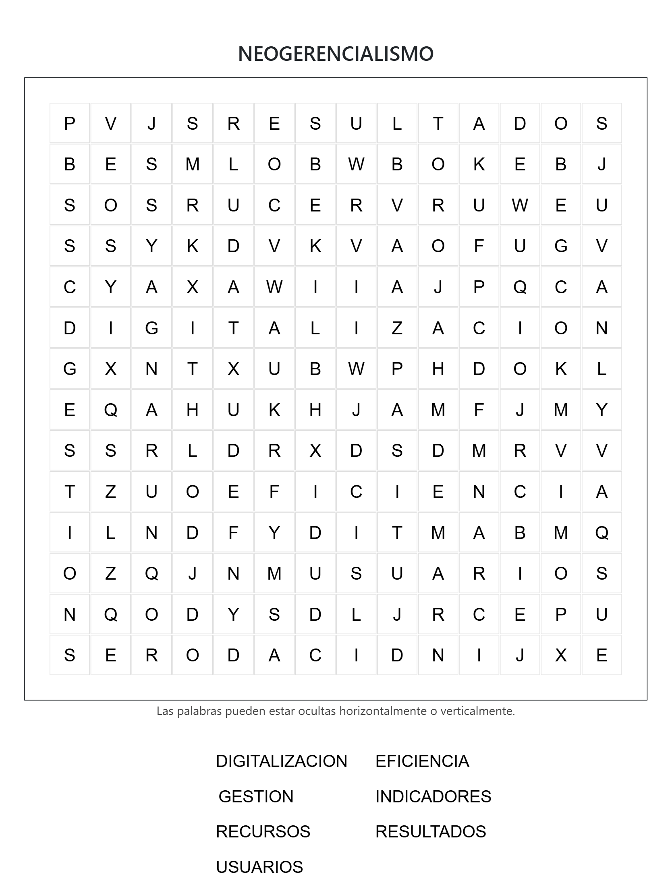

01
ENSAYO · TAPIA MATÍAS
Neogerencialismo: Hospital Público San Gabriel
Haz clic para abrir el documento.
ADMINISTRACIÓN PÚBLICA · TRABAJO AUTÓNOMO 4
¿Puede la administración pública adoptar herramientas de gestión moderna sin perder de vista al ciudadano?
Conoce a los integrantes que forman parte de este proyecto sobre Neogerencialismo y Administración Pública.
Estudiante de Administración Pública
Estudiante de Administración Pública
Estudiante de Administración Pública
Estudiante de Administración Pública
Carrera
02 · ENSAYOS
Selecciona a cada integrante para conocer el ensayo que desarrolló sobre el Neogerencialismo.
Haz clic para abrir el documento.
Haz clic para abrir el documento.
Haz clic para abrir el documento.
Haz clic para abrir el documento.
Documento académico del integrante.
Si el PDF no se muestra dentro de la ventana:
ABRIR PDF EN OTRA PESTAÑA ↗03 · CASO PRÁCTICO
Haz clic en el caso general para descubrir cómo podría aplicarse un enfoque gerencial a una situación concreta.
Implementar plataformas digitales para reducir trámites presenciales.
Medir tiempos de atención, satisfacción y resultados.
Evaluar periódicamente el desempeño de la institución.
Colocar al ciudadano como centro de la gestión pública.
Imagina que acabas de asumir la dirección de una institución pública.
Los ciudadanos se quejan porque un trámite tarda demasiado. ¿Qué harías?
El neogerencialismo busca incorporar herramientas de gestión del sector privado dentro de la administración pública, poniendo énfasis en eficiencia, resultados e indicadores.
DATO CURIOSO


Un ejemplo de cómo la gestión por objetivos, la digitalización y los indicadores pueden transformar un servicio público.
Un hospital público sufre largas filas y demoras de semanas para asignar turnos médicos.
Causa tradicional: el sistema se basa estrictamente en la jerarquía y el cumplimiento de trámites en papel. No existe un responsable directo de la eficiencia ni una medición constante de los tiempos de atención.
Se implementa una plataforma digital de autogestión de citas y se establecen indicadores clave de rendimiento (KPIs) para los jefes de área, midiendo el tiempo de espera del paciente.
Además, se flexibilizan los procesos internos de compra de software mediante contratos por resultados, en lugar de una supervisión rígida de cada firma previa.
Éxito: el tiempo de espera se reduce de 21 días a 48 horas y la satisfacción ciudadana aumenta un 60%.
Tensión: parte del personal administrativo antiguo rechaza el sistema porque altera las normas tradicionales y exige una productividad que antes no se auditaba. Esto genera roces entre la legalidad formal y la urgencia de resultados del gerencialismo.
Sopa de letras.
